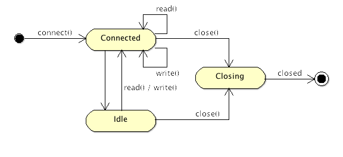

Session
Session（会话）是 MINA 的核心。每当一个客户端连接到服务器，一个新的会话会被创建，并会在客户端关掉连接前一直保存在内存中。
会话用于保存连接的持久信息，以及在请求处理过程中、会话的生命周期中服务器可能需要用到的任何信息。
会话的状态
会话会有一个随着时间演变的状态：
- 已连接：会话已被创建并可用
- 闲置：会话在至少一段时间 (这段时间是可配的) 内没有处理任何请求
- 读闲置：在一段时间内没有任何读操作
- 写闲置：在一段时间内没有任何写操作
- 同时闲置：在一段时间内既没有读操作也没有写操作
- 关闭中：会话正在关闭中 (还有正在清空的消息，清理尚未结束)
- 已关闭：会话现在已被关闭，没有其他方法可以将其恢复。
以下状态图揭示了所有可能的状态及其转换：

配置
对于特定会话可以设置以下不同的参数：
- 接收缓冲大小
- 发送缓冲大小
- 空闲时间
- 写超时时间
另外还有一些其他配置，取决于你所用的传输类型 (参考Chapter 6 - Transports)。
管理用户定义的属性
有可能需要存储一些以后可能会用到的数据。这个使用每个会话关联到的专用数据结构来实现。这是一个键值对组合，它可以存储开发人员可能希望保存的任何类型的数据。
例如，如果你想跟踪会话创建以后用户已发送的请求次数，把它放进集合很容易：只需要创建将要关联到这个值的键即可。
...
int counterValue = session.getAttribute( "counter" );
session.setAttribute( "counter", counterValue + 1 );
...
这样就有了将保存属性放进会话的方法：属性就是一个键值对，它可以从会话的容器中添加、删除以及读取。
容器在会话创建时会被自动创建，而在会话结束时会被清理。
定义容器
如上所述，容器是存储键值对的容器，默认情况下是一个 Map，但是也可以定义做其他的数据结构，如果你想处理长寿命周期的数据，或者避免将所有大数据都存储在内存：我们可以实现一个接口和一个工厂用于在会话建立时创建容器。
以下代码演示了会话初始化时容器的创建：
protected final void initSession(IoSession session,
IoFuture future, IoSessionInitializer sessionInitializer) {
...
try {
((AbstractIoSession) session).setAttributeMap(session.getService()
.getSessionDataStructureFactory().getAttributeMap(session));
} catch (IoSessionInitializationException e) {
throw e;
} catch (Exception e) {
throw new IoSessionInitializationException(
"Failed to initialize an attributeMap.", e);
}
...
如果我们想要定义其他类型的容器，这里是我们可以实现的工厂接口：
public interface IoSessionDataStructureFactory {
/**
* Returns an {@link IoSessionAttributeMap} which is going to be associated
* with the specified <tt>session</tt>. Please note that the returned
* implementation must be thread-safe.
*/
IoSessionAttributeMap getAttributeMap(IoSession session) throws Exception;
}
过滤器链
每个会话会关联到一个过滤器链，在连入一个请求或者接收/发出消息时这个过滤器链将会对其处理。这些过滤器针对于每个每个单独的会话，在多数情况下，会为所有现有会话使用同一个过滤器链。
但是，也可以为单个会话动态修改过滤器链，比如为指定的会话的过滤器链添加一个日志过滤器。
统计
每个会话也会保持对会话处理结束的一些记录的跟踪：
- 接收或发送的字节数
- 接收或发送的消息数
- 闲置状态
- 吞吐量
以及其他一些有用的信息。
处理器
最后，并非最不重要的，每个会话会被附加到一个处理器，该处理器负责调度给你的应用的消息。这个处理器也会通过使用会话发送响应包，只需调用 write() 方法：
...
session.write( <your message> );
...